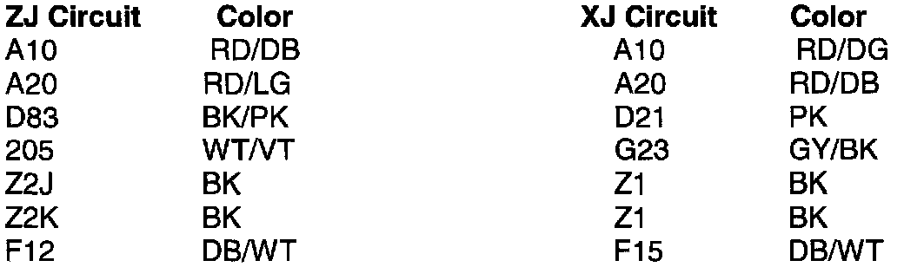

ABS - Connector Repair
NO: 08-19-98GROUP: Electrical
DATE: May 8, 1998
SUBJECT:
ABS 25 Way Connector Repair
MODELS:
1997 - 1998 (XJ) Cherokee
1997 - 1998 (ZJ) Grand Cherokee
1997 - 1998 (ZG) Grand Cherokee (International Markets)
PARTS REQUIRED:
1 05010132AB Connector
2 04778570 Heat Shrink Tubing
DISCUSSION:
A harness repair kit has been released to enable repairs to the headlamp and dash harness, 25 way connector, at the ABS Hydraulic Control Unit (HCU). This kit will allow repairs to be made to the harness if the connector is damaged and will eliminate having to replace the entire harness.

The repair kit was designed for use on the ZJ/ZG, and the pigtails on the connector match the ZJ/ZG wire harness. The kit can be used on XJ using the wire color conversions listed. Inspect the connector on the HCU for any signs of damage to the housing or terminals. If damage is present, the module will have to be replaced.
When performing this repair, the splices must be staggered by 2 inches, with no more than 2 splices at the same location. The splices must be soldered using rosin core solder and each splice must be covered with heat shrink tubing, p/n 04778570. Use care when performing the solder operation to avoid cold solder joints. Always heat the wire hot enough to allow the solder to melt on contact with the wire. Make sure to tape and route the harness as it was originally installed.
POLICY: Information Only